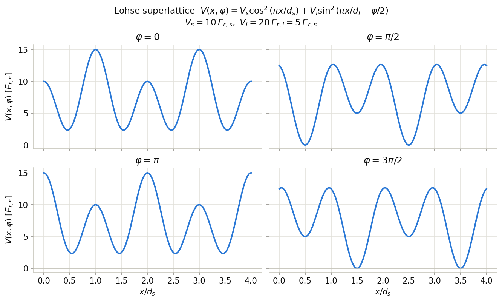
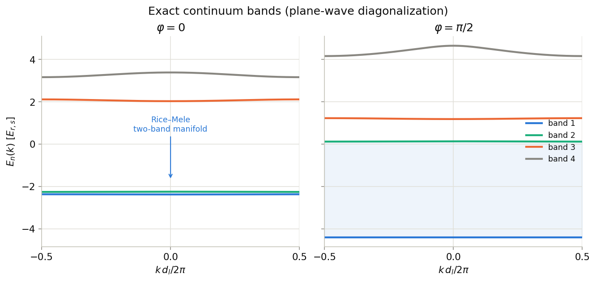
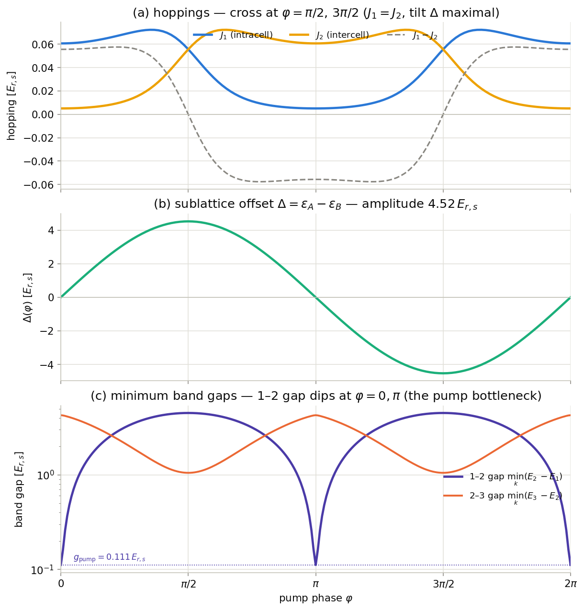
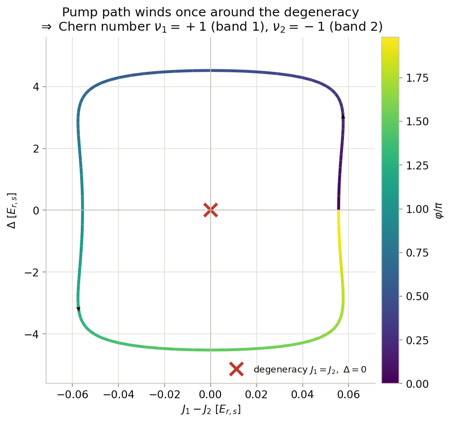
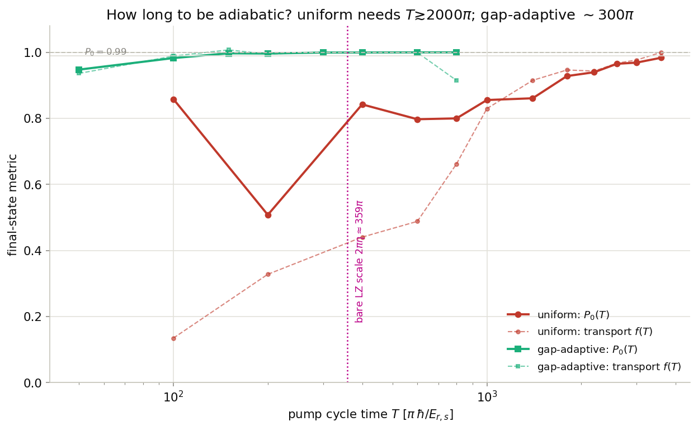
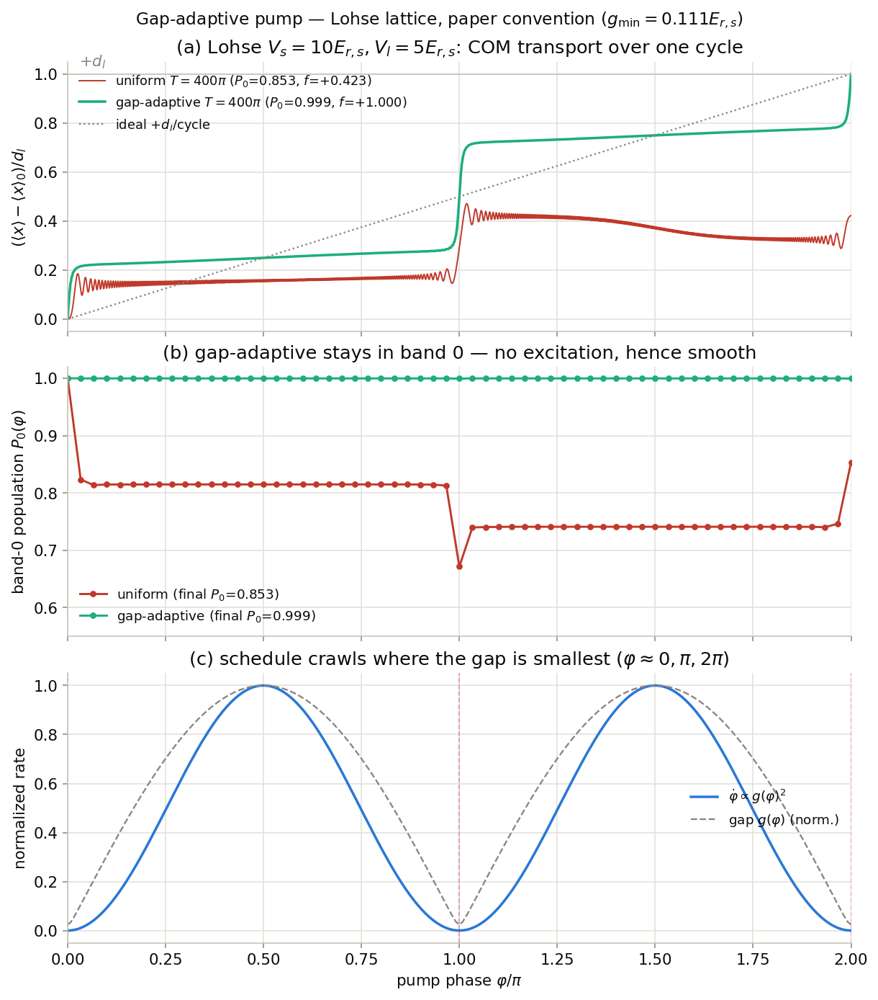
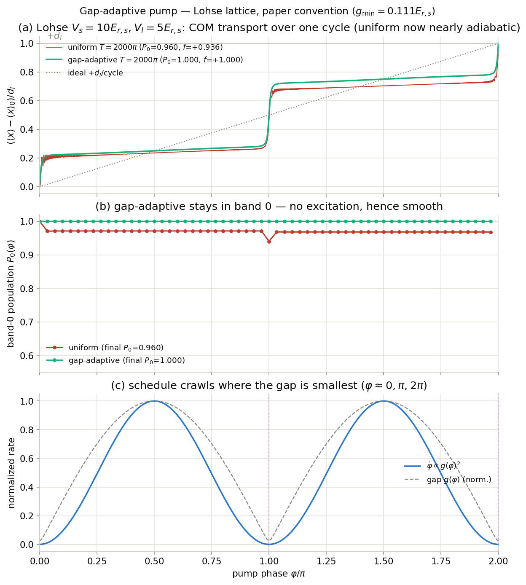

Lohse (2016) Thouless 泵浦经验参考
阅读 reference/lohes_nature_physics.pdf（Lohse, Schweizer, Zilberberg,
Aidelsburger & Bloch, Nature Physics 12, 350 (2016)）后整理的定量参考：
连续超晶格哈密顿量 → Rice–Mele 紧束缚模型（\(J_1, J_2, \Delta\)）→ 能隙 →
泵浦周期要多长才算绝热 → 均匀驱动 vs gap-adaptive 驱动的实时模拟曲线。
本页所有数字都由本目录的 make_lohse_reference.py 从头算出（非从论文摘抄），
并与论文给出的数量级一致。
1. 论文在做什么
Thouless 泵浦：让哈密顿量沿一个闭合回路缓慢（绝热）循环一周，每周期输运的粒子数由拓扑不变量 （Chern 数）决定，量子化且对微扰鲁棒。Lohse 等人在光学超晶格里用 \(^{87}\mathrm{Rb}\) Mott 绝缘体（每个 double well 一个原子，约 3000 个原子）首次干净地实现了这一点：
- 动态控制长晶格相位 \(\varphi\)，每推进 \(2\pi\) 为一个泵浦周期；用原位成像测原子云质心（COM）。
- 最低带：每周期 COM 平移 \(+d_l\)（Chern 数 \(\nu_1=+1\)），台阶状前进，台阶出现在 \(\varphi=\ell\pi\) 附近；反向驱动则反向平移。
- 第一激发带：反向输运 \(\nu_2=-1\)（"counterintuitive reversed deflection"）， 这是经典粒子做不到的、纯量子隧穿效应。
- 泵浦效率：COM 拟合给出每半周期 97.9(2)%，与位置分辨的 even–odd 布居测量 98.7(1)% 一致 —— 也就是说实验本身略微不完全绝热。
- 调节 \(V_s\) 还能让高带经历一系列拓扑转变（sliding lattice 极限 → Wannier 隧穿极限）， 转变点在 \(V_s = V_l^2/(4E_{r,s})\)。当前参数 \(V_l=5\,E_{r,s}\) 给出转变点 \(6.25\,E_{r,s} < V_s=10\,E_{r,s}\)，故处于 Wannier 隧穿区。
2. 连续系统哈密顿量（论文约定）
两套驻波叠加：短晶格周期 \(d_s\)、长晶格周期 \(d_l = 2 d_s\) （实验 \(\lambda_l = 1534\,\mathrm{nm}\Rightarrow d_l = 767\,\mathrm{nm},\ d_s = 383.5\,\mathrm{nm}\)）。 单粒子哈密顿量与论文原式：
用 \(\sin^2\theta = (1-\cos 2\theta)/2\) 展开成余弦形式（丢掉常数 \((V_s+V_l)/2\)）， 记 \(a \equiv d_l = 2d_s\)：
与本仓库 main.cpp 约定的映射
ECG 代码积分的势是 \(V^{m}(x,\varphi^{m}) = -V_s^{m}\cos(4\pi x/a) - V_l^{m}\cos(2\pi x/a + \varphi^{m})\)。 对论文势做原点平移 \(x \to x - a/4\)： \(\cos(4\pi x/a - \pi) = -\cos(4\pi x/a)\)， \(\cos(2\pi x/a - \pi/2 - \varphi)\)，于是两者严格相等（差一个常数）：
set_lattice_depths_over_recoil(cfg, 20.0, 10.0)，
相位 schedule 用本目录 gap_adaptive_lohse_maincpp_schedule.csv
（已按 \(\varphi^{m}(s)=3\pi/2-\varphi(s)\) 换算好）。

3. Rice–Mele 紧束缚哈密顿量
深晶格、只保留最低两条带时，超晶格映射为 Rice–Mele 模型（论文式 (2)）： 每个原胞 \(m\) 有偶（\(\hat a_m\)，左）奇（\(\hat b_m\)，右）两个格点，
Bloch 表象下是 \(2\times 2\) 矩阵，两条带解析可写：
泵浦的微观图像（论文 Fig. 1b）：\(\varphi=0\) 时原子对称地摊在一个 double well 里； \(\varphi\) 增大 → \(\Delta>0\) 把 double well 倾斜，原子隧穿到低的一侧； \(\varphi=\pi/2\) 时 \(J_1-J_2\) 变号；\(\varphi=\pi\) 时晶格又成对称 double well， 但整体错了一个 \(d_s\)。后半周期重复一次，净位移 \(d_l\)。经典粒子不动（格点位置本身不动）， 输运完全靠量子隧穿。

4. \(J_1(\varphi),\ J_2(\varphi),\ \Delta(\varphi)\) 与能隙的数值
两条独立提取路线，互为校验： (i) Wannier 投影 —— 取最低两条带的本征空间，对角化投影位置算符得最局域 Wannier 函数， 直接算矩阵元 \(J = -\langle w_i|H|w_j\rangle\)、\(\Delta = \epsilon_A - \epsilon_B\)； (ii) 能带拟合 —— 把精确二带色散拟到 Rice–Mele 形式， 精确给出 \((\Delta/2)^2 + J_1^2 + J_2^2\) 与 \(2J_1J_2\)。 两者对最小能隙的预测 \(2\sqrt{(\Delta/2)^2+(J_1-J_2)^2}\) 与精确带隙逐点重合； Rice–Mele 二带模型对精确能带的最大残差仅 \(0.0035\,E_{r,s}\)。
| 量 | 取值 [\(E_{r,s}\)] | 换算（\(^{87}\mathrm{Rb}\), \(E_{r,s}/h = 3.90\,\mathrm{kHz}\)） | 位置 / 说明 |
|---|---|---|---|
| \(J_1(0)\) | 0.06074 | h × 237 Hz | \(\varphi=0\)，强键（原胞内） |
| \(J_2(0)\) | 0.00510 | h × 19.9 Hz | \(\varphi=0\)，弱键；\(J_1/J_2 = 11.9\)，论文的 \(J_1\gg J_2\) 初态 |
| \(J_1=J_2\)（交叉点） | 0.0557 | h × 217 Hz | \(\varphi=\pi/2,\ 3\pi/2\)（所有势垒等高） |
| \(\Delta_{\max}\) | 4.5194 | h × 17.6 kHz | \(\varphi=\pi/2,\ 3\pi/2\)；近似 \(\Delta(\varphi)\approx\Delta_{\max}\sin\varphi\) |
| \(g_{\mathrm{pump}}=\min_{k,\varphi}(E_2-E_1)\) | 0.11129 | h × 434 Hz | \(\varphi=0,\pi\)（\(k=\pi/d_l\)）：泵浦全程的最小能隙，绝热瓶颈 |
| \(g_{23}=\min_{k,\varphi}(E_3-E_2)\) | 1.04997 | h × 4.10 kHz | 二带流形与第 3 带的隔离间隙（约 \(9.4\times g_{\mathrm{pump}}\)） |
注意一个反直觉点：\(\varphi=0\) 是"对称 double well"，看起来最无害， 但恰恰是能隙最小、最容易非绝热激发的地方 —— 因为此处 \(\Delta=0\)， 能隙只剩隧穿劈裂 \(2(J_1-J_2)\approx 0.11\,E_{r,s}\)； 而"倾斜最猛"的 \(\varphi=\pi/2\) 反而有 \(\Delta_{\max}=4.5\,E_{r,s}\) 的大间隙保护。 所以泵浦的危险区在 \(\varphi=0,\pi,2\pi\) 附近（隧穿事件发生时）。


5. 要多长时间才算绝热？
标准绝热判据是每一瞬时的"激发率"远小于 1：
均匀驱动 \(\dot\varphi = 2\pi/T\) 时 \(\max r = 2\pi\eta/T\)， 于是裸 Landau–Zener 时间尺度是 \(T_{\mathrm{LZ}} = 2\pi\eta \approx 359\pi\,\hbar/E_{r,s}\)。 但 \(r\lesssim 1\) 只是"开始不剧烈激发"，实用的绝热（\(P_0\ge 0.99\)）还要在它上面乘个 安全系数。实测（分裂步 TDSE，一个 Wannier 波包跑完整周期）：
| 驱动方式 | 目标 | 周期 \(T\) [\(\pi\,\hbar/E_{r,s}\)] | \(^{87}\mathrm{Rb}\) 物理时长 | ECG 代码单位（\(a=8\)） |
|---|---|---|---|---|
| 均匀 \(\dot\varphi=\mathrm{const}\) | \(P_0\ge 0.99\) | ≳ __T99UNI__π | ≈ __T99UNI_MS__ ms/cycle | T ≈ __T99UNI_CODE__π |
| gap-adaptive \(\dot\varphi\propto g^2\) | \(P_0\ge 0.99\) | ≈ __T99ADA__π | ≈ __T99ADA_MS__ ms/cycle | T ≈ __T99ADA_CODE__π |
| gap-adaptive \(\dot\varphi\propto g^2\) | \(P_0\ge 0.999\) | ≈ __T999ADA__π | ≈ __T999ADA_MS__ ms/cycle | T ≈ __T999ADA_CODE__π |
三点解读：
- 均匀驱动大约要 \(T\gtrsim\) __T99UNI__\(\pi\,\hbar/E_{r,s}\)（安全系数 ≈ 5–6 倍于 \(2\pi\eta\)）。而且逼近不是单调的：波包每周期两次穿过最小隙（\(\varphi=0,\pi\)）， 产生 Stückelberg 干涉振荡（图 6 的红线摆动）。
- gap-adaptive schedule 把它压缩约一个数量级：让 \(\dot\varphi\propto g(\varphi)^2\)， 激发率 \(r\) 全程近似恒定，"隙小就爬、隙大就冲"。\(T=400\pi\) 时已 \(P_0=0.999\)。
- 换算成实验时间尺度（\(\hbar/E_{r,s}=40.8\,\mu s\)，\(\pi\hbar/E_{r,s}=0.128\) ms）： 均匀绝热周期 ≈ 数百 ms，这解释了论文效率 97.9%/半周期 —— 实验用的周期处于 "接近但未完全绝热"的区间，属合理的实验折中。

6. 模拟曲线（对照 Vs3/Vl3 参考图的三联版式）
与 rice_mele_reference/Vs3Vl3_3_3/figs/gap_adaptive_grid_Vs3Vl3_maincpp.png
同款三联图，但换成 Lohse 晶格（论文约定，\(\varphi:0\to 2\pi\)，理想输运 \(+d_l\)/cycle）。
初态是 \(\varphi=0\) 的带 0 Wannier 波包，分裂步 TDSE 演化一整周期：


7. 文件与复现
| 计算脚本 | make_lohse_reference.py —— 一条命令重算本页全部数字与图：python3 make_lohse_reference.py（约 5–10 分钟）。 |
|---|---|
| 数据 | lohse_reference_data.npz（全部曲线）、lohse_reference_summary.json（本页头条数字）。 |
| 相位 schedule | gap_adaptive_lohse_schedule.csv（论文约定 \(\varphi(s)\)）；
gap_adaptive_lohse_maincpp_schedule.csv（main.cpp 约定 \(\varphi^{m}(s)=3\pi/2-\varphi(s)\)，
两列 s,phi，可直接被 main.cpp 的 loader 读取）。 |
| 图 | figs/fig1…fig7，全部由脚本生成。 |
| 论文 | reference/lohes_nature_physics.pdf —— M. Lohse et al.,
"A Thouless quantum pump with ultracold bosonic atoms in an optical superlattice",
Nat. Phys. 12, 350–354 (2016), DOI: 10.1038/NPHYS3584。 |
| 方法一致性 | 算法与 Vs3/Vl3 参考数据同源（平面波 Bloch 能带、投影位置算符 Wannier、 分裂步 TDSE、\(\dot\varphi\propto g^2\) schedule），关键数与旧工程校验值完全一致 （\(J_1(0)=0.06074\)、\(\Delta_{\max}=4.5194\)、\(g_{\mathrm{pump}}=0.11129\)、\(\eta=179.5\)）。 |
单位速查
| 量 | 取值 |
|---|---|
| \(E_{r,s}/h\)（\(^{87}\mathrm{Rb}\), \(\lambda_s=767\) nm） | 3.902 kHz |
| \(\hbar/E_{r,s}\) | 40.79 μs；\(\pi\hbar/E_{r,s} = 0.1281\) ms |
| \(E_{r,l}\) | \(E_{r,s}/4\)（故 \(V_l = 20\,E_{r,l} = 5\,E_{r,s}\)） |
| ECG 代码时间（\(\hbar=m=1,\ a=8\)） | \(T_{\mathrm{code}} = (8/\pi^2)\,T[\hbar/E_{r,s}] = 0.8106\,T\)；如 \(T=400\pi\hbar/E_{r,s} \Rightarrow 324\pi\) code units |
| 对照：Vs3/Vl3 成功案例 \(T=160\pi\) code units | \(=197\pi\,\hbar/E_{r,s}\)（但那是浅得多、相对隙大得多的晶格） |